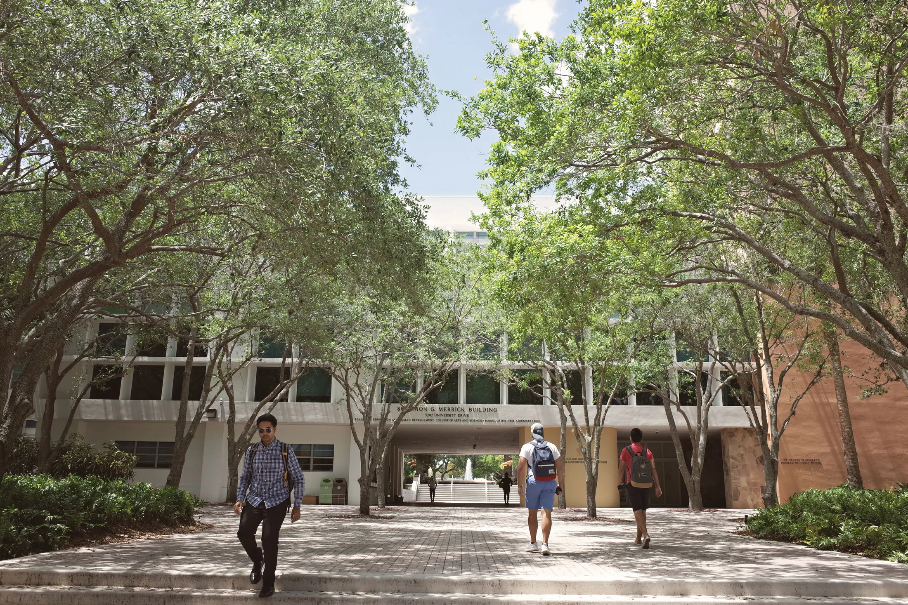
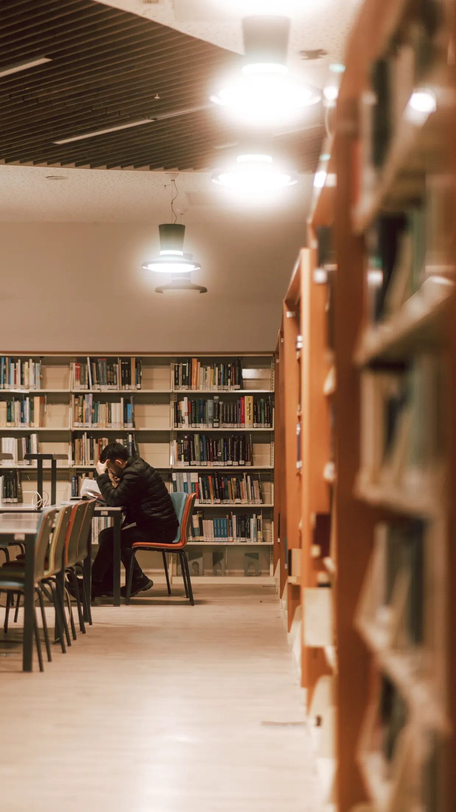
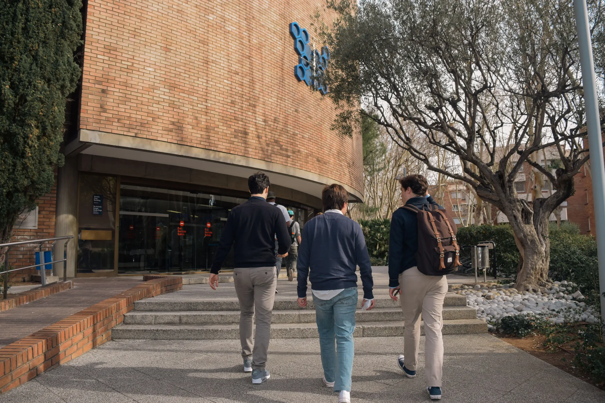

Software, datos, IA, ciberseguridad y diseño digital.

Colegio y Universidad · Inicial, Primaria, Secundaria y carreras profesionales
De la primerahojaal próximo capítulo.
Acompañamos a cada estudiante desde sus primeros aprendizajes hasta su formación profesional, ayudándolo a descubrir su voz, fortalecer su confianza y construir habilidades reales para participar activamente en el mundo que viene.
De los primeros trazos a la vida profesional
Una comunidad educativapara cada etapa de la vida.
Cada etapa necesita una forma distinta de aprender. Por eso diseñamos recorridos que combinan contención, exploración, pensamiento crítico, orientación vocacional, investigación aplicada y desafíos progresivos.

01 · Años 3 a 5
→
Inicial
Juego, lenguaje, movimiento y vínculos seguros.

02 · 1.º a 6.º año
→
Primaria
Bases sólidas en lectura, matemática, ciencias, arte y convivencia.

03 · 7.º a 12.º año
→
Secundaria
Autonomía, liderazgo y visión de futuro.

04 · Carreras profesionales
→
Universidad
Investigación, innovación, empleabilidad y proyectos reales.

Formación superior con impacto
La universidad como próximo capítulo natural.
La Hoja integra colegio y universidad para que la transición hacia la vida profesional sea más clara, humana y conectada con oportunidades reales.
Administración, comunicación, finanzas y emprendimiento.
Educación, psicología, bienestar y transformación social.
“Llegamos buscando un colegio exigente, pero encontramos algo más profundo: una comunidad donde nuestra hija se siente conocida, escuchada y capaz de animarse a más.”
Familia de Secundaria · Colegio y Universidad de la Hoja
Excelencia con sentido humano
Resultados que se sienten dentro y fuera del aula.
La excelencia académica ocurre por acompañamiento, claridad y propósito. En La Hoja, cada estudiante aprende a pensar, comunicar, investigar, colaborar y tomar decisiones con confianza.
Ver logros académicosde familias recomiendan la experiencia La Hoja
de estudiantes participan en actividades extracurriculares
programas de liderazgo, arte, deporte, tecnología e investigación
de acompañamiento personalizado académico y vocacional

Cuidado que impulsa el aprendizaje
Bienestar como base para crecer.
Aprender bien empieza por sentirse seguro. Nuestro equipo acompaña el desarrollo emocional, social, académico y vocacional de cada estudiante.
Explorar bienestar estudiantilVida La Hoja
Aprender también sucede fuera del aula, del laboratorio y del campus.
Comunidad en movimiento
Historias recientes de La Hoja.
Innovación
Estudiantes presentan soluciones sustentables para la ciudad
Proyecto interdisciplinario de ciencias, diseño y tecnología.
CampusNueva biblioteca creativa y centro de innovación
Un espacio flexible para leer, investigar, prototipar, crear y compartir.
ComunidadFestival de Artes y Conocimiento
Música, teatro, ciencia, tecnología y producción audiovisual.
Descubrí La Hoja en persona.
La mejor forma de conocer nuestra comunidad es vivirla. Agendá una visita al campus y descubrí cómo acompañamos a cada estudiante a crecer con confianza, curiosidad, método y propósito.